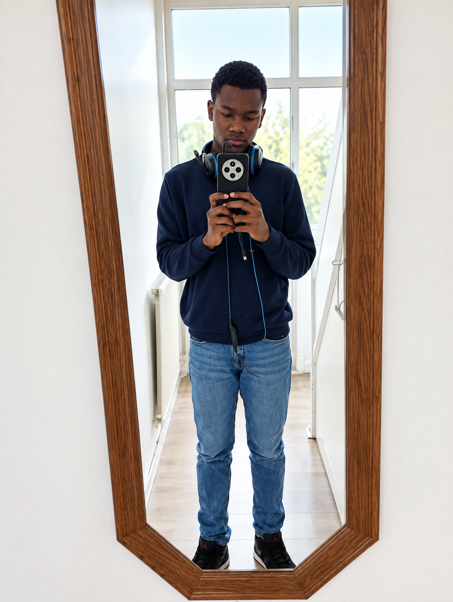
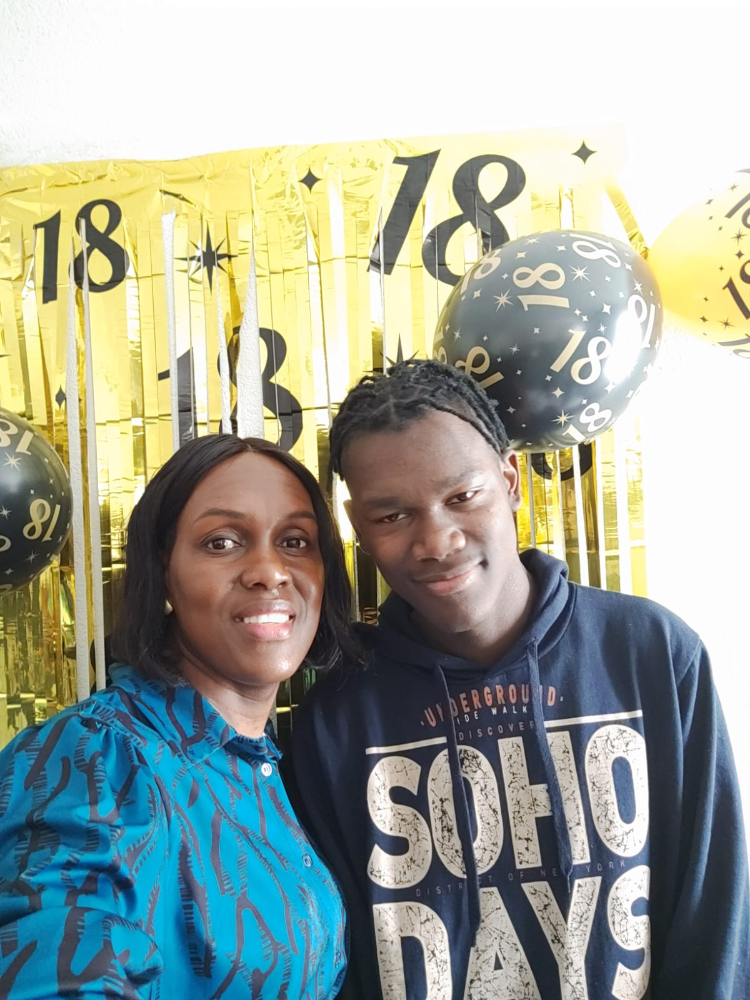

Tony Mathurin

Onprofessioneel chef Onprofessioneel software developer professioneel gamer
Hallo ik ben Tony ben 18 jaar oud . ik ben een ICT student by Rotterdam techniek college Op deze website stel ik mezelf voor, vertel ik over mijn opleiding en laat ik mijn ontwikkeling zien.
Over mijzelf
"Hoi, ik ben Tony. Ik ben 18 jaar oud en ik ga naar het Rotterdam Techniek College. Als nieuwe student leer ik programmeren en probeer ik zelf codes te schrijven. Daarnaast ben ik sinds kort begonnen met streamen, en mijn doel is om een professionele streamer te worden. Ook wil ik een goede programmeur worden om betere AI te ontwikkelen of games te coderen. Hopelijk kan ik in de toekomst samen met mijn goede vrienden een eigen bedrijf oprichten. i am also a decent editor but still trying to learn more

Toekomst Projecten
Interview Pagina
Waarom heb je gekozen voor de opleiding Software Developer?
Ik heb gekozen voor de opleiding Software Developer omdat ik geïnteresseerd ben in computers en technologie. Ik wil graag leren hoe je websites, apps en programma's kunt maken.
Wat sprak je het meeste aan in deze opleiding?
Het programmeren sprak mij het meeste aan. Ik vind het interessant dat je met code iets kunt maken dat uiteindelijk echt werkt.
Had je al ervaring met programmeren voordat je aan de opleiding begon?
Nee, ik had nog niet veel ervaring met programmeren. Ik had wel interesse in computers, maar tijdens de opleiding leer ik steeds meer over programmeren en software ontwikkelen.
Wat hoop je te leren tijdens de opleiding?
Ik hoop verschillende programmeertalen te leren en beter te worden in het maken van websites en applicaties. Ook wil ik leren hoe je samen met anderen aan softwareprojecten werkt.
Wat vind je tot nu toe het leukste onderdeel van de opleiding?
Ik vind het leuk om opdrachten te maken waarbij je zelf iets moet bouwen. Het geeft een goed gevoel wanneer je code eindelijk werkt nadat je een probleem hebt opgelost.
Get in touch
Have a question or want to connect? Here is where you can find me.
Phone +31 687584008 Email milenciomathurin120@gmail.com GitHub TonyMathurin